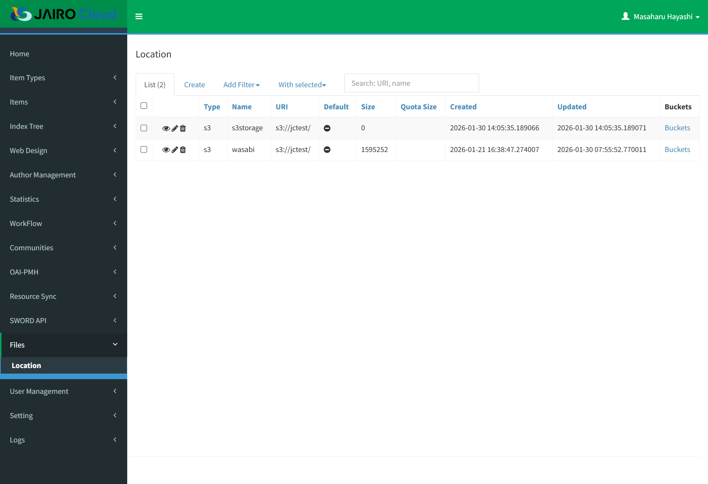
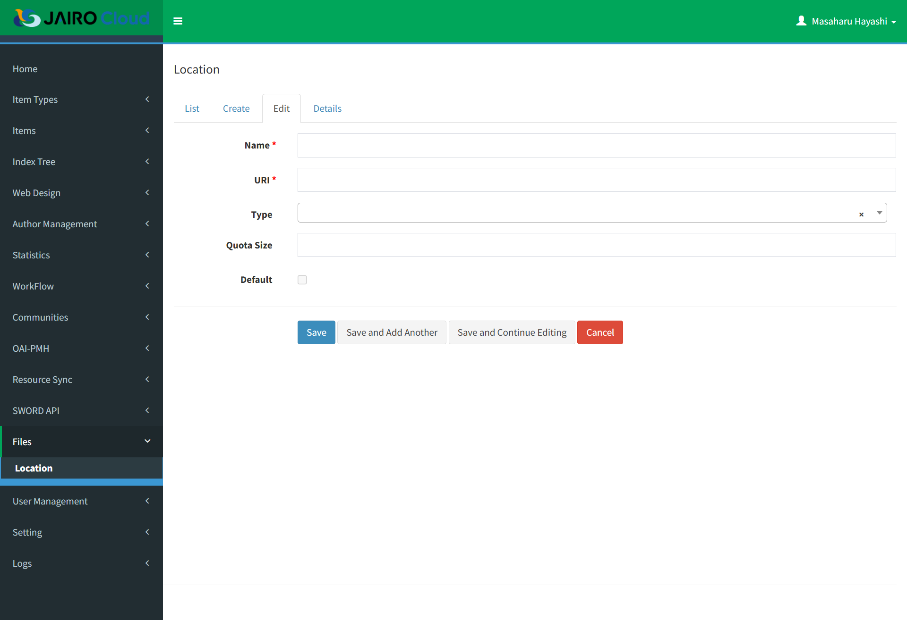
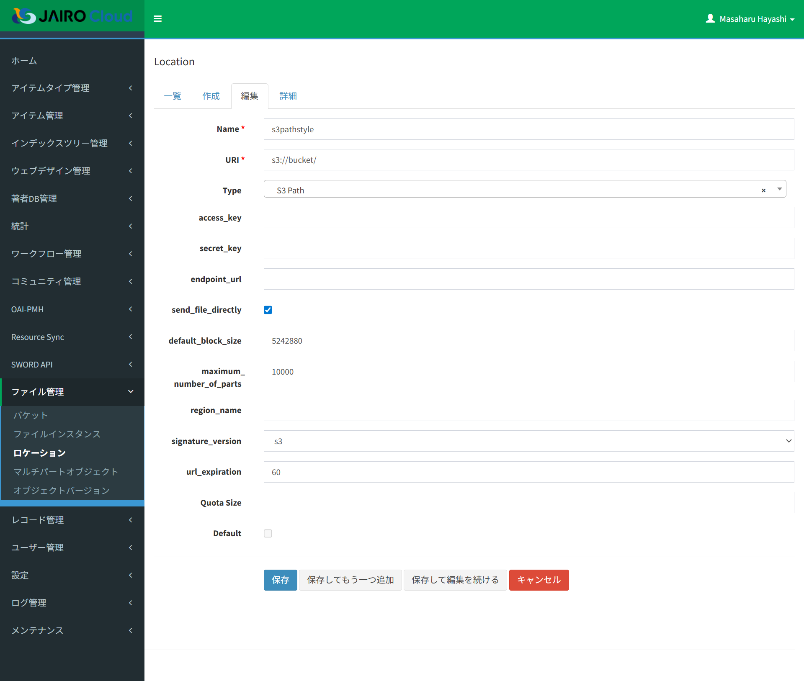
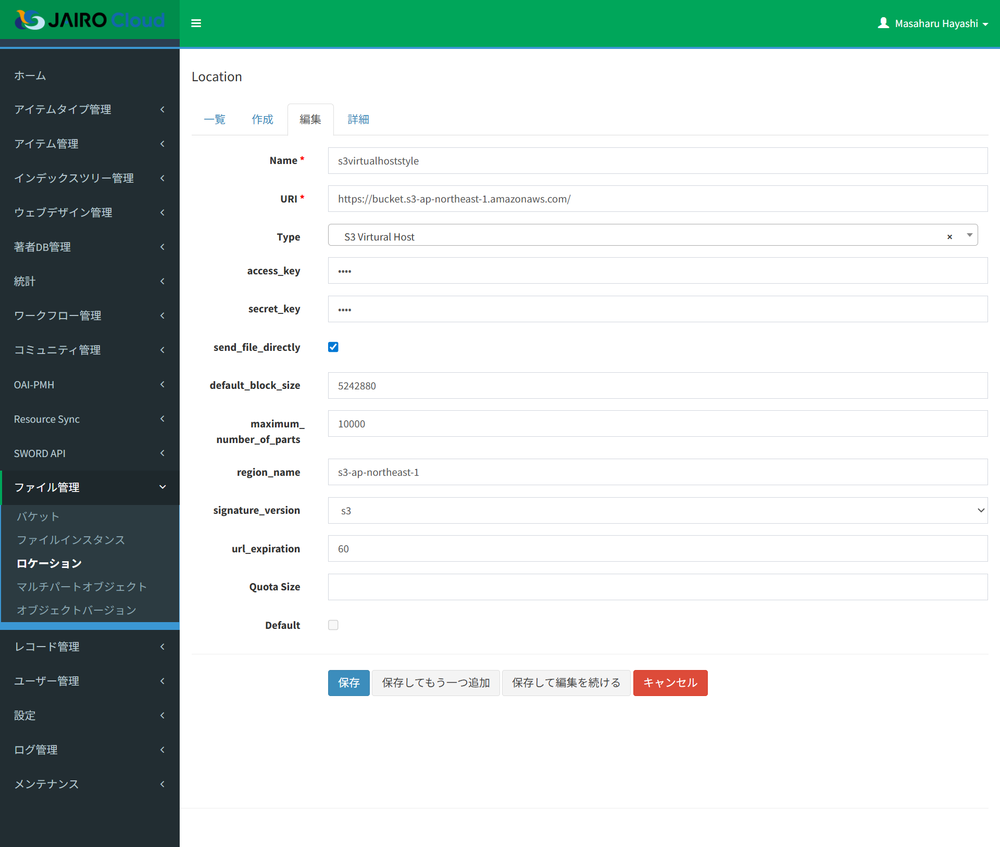

ロケーション
目的・用途
本機能は、管理者として、アップロードしているファイルの配置先及びロケーションごとの使用量の情報を管理する機能である
利用方法
【Administration > ファイル管理（Files）> ロケーション（Location）】から、ロケーションの情報の閲覧、編集、作成をする。
利用可能なロール
| ロール | システム管理者 | リポジトリ管理者 | コミュニティ管理者 | 登録ユーザー | 一般ユーザー | ゲスト(未ログイン) |
|---|---|---|---|---|---|---|
| 利用可否 | ○ | ○※ |
- 【v2.1.0】ロケーションの作成/編集/削除はシステム管理者のみ可能。リポジトリ管理者は一覧・詳細の閲覧のみ（デフォルトロケーションを含め表示できるが操作は不可）。
画面内容
ロケーション一覧画面

- 【ロケーション（Location）画面】には以下のタブが表示される
- 一覧（List）
- 作成（Create）
- フィルターを追加▼（Add Filter▼）
- 一覧（List）タブ選択中のみ表示
- 外観はタブだが機能としてはプルダウンメニュー
- Default
- Created
- Updated
- 選択▼（With selected▼）
- 一覧（List）タブ選択中のみ表示
- 外観はタブだが機能としてはプルダウンメニュー
- 削除（Delete）
- 選択したロケーションを削除
- 削除（Delete）
ロケーション設定画面

- 【ロケーション（Location）設定画面】には以下のタブが表示される
- 一覧（List）
- 作成（Create）
- 編集（Edit）
- 詳細（Details）
ロケーション一覧画面(S3互換オブジェクトストレージ)
- ロケーションタイプが「S3 Path」または「S3 Virtual Host」である場合の設定画面である。


機能内容
ロケーションを一覧で表示する。
「一覧」（List）タブにロケーション一覧を表示する
- 表示項目は以下の通りである
- チェックボックス
- アクション（閲覧・編集・削除）
- 「Type」：ロケーションタイプ
押下すると一覧のロケーションをソートする。 - 「Name」
押下すると一覧のロケーションをソートする。 - 「URI」
押下すると一覧のロケーションをソートする。 - 「Default」：デフォルトの状態
押下すると一覧のロケーションをソートする。 - 「Size」：使用量の情報
押下すると一覧のロケーションをソートする。 - 「Quota Size」：ロケーションの使用上限
押下すると一覧のロケーションをソートする。 - 「Created」：ロケーションの作成時間
フォーマット：「YYYY-MM-DD hh:mm:ss.tttttt」
押下すると一覧のロケーションをソートする。 - 「Updated」：ロケーションの更新時間
フォーマット：「YYYY-MM-DD hh:mm:ss.tttttt」
押下すると一覧のロケーションをソートする。 - 「Buckets」リンク
リンクをクリックすると、【Admin > Files > Bucket画面】に移動し、当該ロケーションが属するバケット一覧がフィルターされる
- 表示項目は以下の通りである
【v2.1.0】デフォルト指定されたロケーションは、システム管理者およびリポジトリ管理者が表示できる（
get_query）。作成/編集/削除はシステム管理者のみ可能。
ロケーション一覧をフィルタ表示する。
- 「フィルターを追加▼」（Add Filter▼）ボタンをクリックすると、以下の追加可能なフィルターリストを表示し、フィルター名をクリックすると当該フィルタの入力エリアを追加する
- フィルター名
- 「Default」
- フィルター方式の選択肢：等しい（equals）、等しくない（not equal）
- 選択したフィルター方式に対して「はい」「いいえ」
- 「Created」
- フィルター方式の選択肢：等しい（equals）、等しくない（not equal）、より大きい（greater than）、より小さい（smaller than）、間（between）、間ではなく（not between）、空（empty）
- 入力された文字列を使い、選択したフィルター方式で絞り込む
- 「Updated」
- フィルター方式の選択肢：「Created」と同じである
- 入力された文字列を使い、選択したフィルター方式で絞り込む
- フィルター方式の選択肢：「Created」と同じである
- 「Default」
- 設定したフィルターは「適用」（Apply）ボタンを押下することで一覧に適用される
- 「フィルターをリセット」（Reset filter）ボタンを押下すると、設定したフィルターがリセットされる
- フィルター名
指定したロケーションを一括削除する。
「選択▼」（With selected▼）ボタンをクリックすると、以下の追加可能な機能（現在削除ボタンのみ）を表示する
レコードにチェックを入れない場合、「削除」（Delete）ボタンを押すと、エラーメッセージを表示する
メッセージ：
日本語：「少なくとも一つのレコードを選択してください。」
英語：「Please select at least one record.」レコードにチェックを入れる場合、「削除」（Delete）ボタンを押すと、確認ダイヤログを表示する
メッセージ：
日本語：「選択したレコードを削除してもよろしいですか。」
英語：「Are you sure you want to delete selected records?」- 「OK」ボタンを押すと、該当ロールを削除し、メッセージを画面上部に表示する
メッセージ：
日本語：「レコード数＋レコードが正常に削除されました。」
英語：「Record was successfully deleted.」 - 「キャンセル」（Cancel）ボタンを押すと、確認ダイヤログを閉じる
- 「OK」ボタンを押すと、該当ロールを削除し、メッセージを画面上部に表示する
ロケーションを検索する
- 検索テキストボックスでロケーションを検索する
- プレースホルダー：「Search: URI, name」
- 任意テキストを入力し、キーボードでの「Enter」を押すと、ロケーション検索を行う
- テキストボックスの右端での「X」ボタンを押すと、検索条件がクリアーされる
- プレースホルダー：「Search: URI, name」
ロケーションの詳細を表示する
- ロケーション行に目アイコンを押すと、該当ロケーションの詳細情報を「詳細」（Details）タブに表示する
- 表示項目：Type、Name、URI、Default、Size、Quota Size、Created、Updated、Buckets
バケットを表示する
- 「Buckets」リンクをクリックすると、【Administration > Files (ファイル管理) > Bucket (バケット) 画面】に移動し、当該ロケーションが属するバケット一覧がフィルターされる
ロケーションを作成する
「一覧」（List）から「作成」（Create）タブを押すと、「編集」(edit)タブに移動しロケーションを新規作成できる
- 入力情報：
- 「Name」：ロケーションを識別するための名前。必須項目
入力パターン：
^[a-z][a-z0-9-]+$ - 「URI」：必須項目
- 「Type」：ロケーションのタイプ。 選択肢：「」「S3 Path」、「S3 Virtual Host」
- 「access_key」：S3互換オブジェクトストレージのアクセスキー
「Type」に「S3 Path」、「S3 Virtual Host」を選択する時表示する - 「secret_key」：S3互換オブジェクトストレージのシークレットキー
「Type」に「S3 Path」、「S3 Virtual Host」を選択する時表示する - 「readonly_access_key」：S3互換オブジェクトストレージの読み取り用アクセスキー（#61752）
「Type」に「S3 Path」、「S3 Virtual Host」を選択する時表示する。入力欄はパスワード形式 - 「readonly_secret_key」：S3互換オブジェクトストレージの読み取り用シークレットキー（#61752）
「Type」に「S3 Path」、「S3 Virtual Host」を選択する時表示する。入力欄はパスワード形式 - 「endpoint_url」：S3互換オブジェクトストレージのエンドポイントURL
「Type」に「S3 Path」を選択する時表示する
保存時、入力内容の末尾に'/'が無い場合、補完する - 「send_file_directly」： ストレージからの直接ダウンロードとするか、Webアプリを経由しての間接ダウンロードとするか。チェックを外すと、ストレージからの直接ダウンロードとなる。
「Type」に「S3 Path」、「S3 Virtual Host」を選択する時表示するチェックボックス
デフォルト：チェックあり - 「default_block_size」
「Type」に「S3 Path」、「S3 Virtual Host」を選択する時表示する
デフォルト：5242880 - 「maximum_number_of_parts」
「Type」に「S3 Path」、「S3 Virtual Host」を選択する時表示する
デフォルト：10000 - 「region_name」
「Type」に「S3 Path」、「S3 Virtual Host」を選択する時表示する
「Type」に「S3 Path」、「S3 Virtual Host」を選択している場合、必須項目 - 「signature_version」：署名バージョン。通常はs3v4を選択します。動かない場合はs3に変更してください。
「Type」に「S3 Path」、「S3 Virtual Host」を選択する時表示する
選択肢：s3、s3v4 - 「url_expiration」
「Type」に「S3 Path」、「S3 Virtual Host」を選択する時表示する
デフォルト：60 - 「Quota Size」：使用上限
- 「Default」
既にデフォルト設定されたロケーションが存在する場合は非活性で表示する
デフォルト：チェックなし
- 「Name」：ロケーションを識別するための名前。必須項目
入力パターン：
「保存」（Save）ボタンを押すと、設定内容をバリデーションチェックし、エラーがない場合、設定されたロケーション内容をロケーション一覧に追加させ、メッセージをロケーション一覧に表示させる
メッセージ：
日本語：「レコードが正常に作成されました。」
英語：「Record was successfully created.」各種設定はデータベースに格納される
- テーブル名：「files_location」
- フィールド名：
- 「id」
- 「name」
- 「uri」
- 「default」
- 「type」
- 「access_key」
- 「secret_key」
- 「readonly_access_key」（
postgresql/ddl/61660.sqlで追加。VARCHAR(128)） - 「readonly_secret_key」（同上）
- 「size」
- 「quota_size」
- 「max_file_size」
- 「s3_endpoint_url」
- 「s3_send_file_directly」
- 「s3_default_block_size」
- 「s3_maximum_number_of_parts」
- 「s3_region_name」
- 「s3_signature_version」
- 「s3_url_expiration」
- フィールド名：
- テーブル名：「files_location」
エラーメッセージは以下の通りである
- 必須項目を指定しない場合、エラーメッセージを該当テキストボックスの下に表示する
メッセージ：
日本語：「このフィールドは必須です。」
英語：「This field is required.」 - 「Name」のフォーマットが不正の場合、エラーメッセージを「Name」テキストボックスの下に表示する
メッセージ：「Invalid location name.」
- 必須項目を指定しない場合、エラーメッセージを該当テキストボックスの下に表示する
「デフォルト設定 (default=True)」を有効にした場合に、他のロケーションが既にデフォルトに設定されていると、保存を中止して画面上部にエラーメッセージを表示する。
メッセージ：
日本語：「他のロケーションがすでにデフォルトに設定されているため、保存できません。」 英語：「Cannot save because another location is already set as default.」「Type」が「S3 Virtual Host」の場合に、「uri」が「https://」から始まらないとエラーメッセージを表示する
メッセージ：「Invalid URL. It should start with https://」「保存してもう一つ追加」（Save and Add Another）ボタンを押すと、設定されたロケーション内容をロケーション一覧に追加させ、他のロケーションを追加設定可能とする
メッセージを画面上部に表示させる
メッセージ：日本語：「レコードが正常に作成されました。」 英語：「Record was successfully created.」「保存して編集を続ける」（Save and Continute Editing）ボタンを押すと、設定されたロケーション内容をロケーション一覧に追加させ、該当ロケーションの編集を続けることを可能とする
メッセージを画面上部に表示させる
メッセージ：日本語：「レコードが正常に作成されました。」 英語：「Record was successfully created.」
- 入力情報：
「キャンセル」（Cancel）ボタンを押すと、設定されたロケーション内容をロール一覧に追加せず、「一覧」（List）タブに戻る
ロケーションを編集する
- ロケーション行に鉛筆アイコンを押すと、該当ロケーションを「編集」（Edit）タブに表示し、ロケーションの情報が編集できる
ロケーションを削除する
ロケーション行に削除アイコンを押すと、該当ロケーションを削除し、メッセージを画面上部に表示する
メッセージ：
日本語：「レコード数＋レコードが正常に削除されました。」
英語：「Record was successfully deleted.」デフォルトに設定されたロケーションが0件または2件以上存在する場合に警告メッセージを表示する。
- 0件の場合：
- 日本語：「デフォルトに設定されたロケーションが存在しません。いずれか1つのロケーションをデフォルトに設定してください。」
- 英語：「No default location is set. Please configure one location as default.」
- 2件以上の場合：
- 日本語：「複数のロケーションがデフォルトに設定されています。デフォルトのロケーションは1つのみ設定可能です。設定を修正してください。」
- 英語：「Multiple locations are set as default. Only one default location can be configured. Please correct the settings.」
- 2件以上の場合：
- 0件の場合：
ロケーション毎の使用量を確認する
- ロケーションごとの使用量（Size）を確認できる
- 「一覧」（List）タブ及び「詳細」（Detail）タブに確認できる - 「Size」の値について - 当該ロケーション配下に登録されているコンテンツファイルのサイズ合計 - 使用量の合計はコンテンツアップロード時に集計する - 以下のファイルはシステムで自動削除し、使用量に集計されないようにする - ワークフローで強制終了したアクティビティに登録していたファイル - アイテム登録後に削除したファイル - ファイルアップロード時に Quota Size を越えるときの判定条件として利用する Location で表⽰される Size ＋ アップロードした Size ＞ Quota Size で判定する
ストレージの使用状況をメールする
設定キー：「update_location_size」
- 合計された「Size」の値はデータベースに保存し、表示の際はデータベースに保存した値をつかう
- リポジトリ管理者として、ストレージ使用状況をメール通知で確認できる
ロケーションの「Size」が指定された閾値を超えていた場合、当該ロケーションが属する機関のリポジトリ管理者にメール通知を行う
メール通知は定期実行とし、実行頻度はコンフィグファイルに変更可能とする
- 設定キー：「storage_check_settings」
- デフォルトは週次とする
- ロケーションの「Size」が指定する閾値を超えた場合メール通知の対象する
- ロケーションの「Quota Size」が設定されていない場合は処理の対象としない
- 閾値はコンフィグファイルに指定する
- 設定キー：「storage_check_settings」
- デフォルトは、Quota Sizeに対して「80％」とする
- 通知先は「リポジトリ管理者」ロールを持つユーザーとする
- メール本文は以下の資料を参照する
別紙「ディスク容量メールひな形.docx」を参照。
- 設定キー：「storage_check_settings」
関連モジュール
- invenio-files-rest
処理概要
ロケーション画面の処理
ロケーション画面を表示した際に、
invenio_files_rest.admin.LocationModelViewが継承したModelViewよりflask_admin.model.base.index_viewメソッドが呼び出される。このメソッドでfiles_locationテーブルより情報を取得し、LocationModelViewのcolumn_listにあるキーに対応する情報を画面に表示する。目アイコンを押下してロケーション詳細情報を表示する際に、
invenio_files_rest.admin.LocationModelViewが継承したModelViewよりflask_admin.model.base.details_viewメソッドを呼び出す。このメソッド下でfiles_locationテーブルより情報を取得し、LocationModelViewのcolumn_details_listにあるキーに対応する情報を画面に表示する。鉛筆アイコンを押下して編集画面を表示する際に、
invenio_files_rest.admin.LocationModelViewが継承したModelViewよりflask_admin.model.base.edit_viewメソッドをGETで呼び出す。このメソッドでidを用いて、files_locationテーブルより情報を取得し、表示する。編集画面で「保存」ボタンを押下する。そうすると、
flask_admin.model.base.edit_viewメソッドをPOSTで呼び出す。このメソッド下で、get_save_return_urlメソッドが呼ばれ、編集内容をfiles_locationテーブルに保存し、更新する。保存時には
LocationModelView.on_model_change()メソッド内でバリデーションを実行する。保存対象のロケーションがdefault=Trueに設定されている場合、他にdefault=Trueのロケーションが存在しないかを確認する。存在する場合はValidationErrorを発生させ、保存を中止し、画面上部にエラーメッセージを表示する。削除アイコンを押下した際に、
invenio_files_rest.admin.LocationModelViewが継承したModelViewよりflask_admin.model.base.delete_viewメソッドをGETで呼び出してfiles_locationテーブルから削除する。作成タブを押下した際に、
invenio_files_rest.admin.LocationModelViewが継承したModelViewよりflask_admin.model.base.create_viewメソッドをGETで呼び出す。LocationModelViewのform_columnsの項目の入力欄を表示する。入力欄に入力後「保存」ボタンを押下する。そうすると、
invenio_files_rest.admin.LocationModelViewが継承したModelViewよりflask_admin.model.base.create_viewメソッドをPOSTで呼び出す。このメソッド下でget_save_return_urlメソッドが呼ばれ、新しいバケットの情報をfiles_bucketテーブルに保存する。保存時には
LocationModelView.on_model_change()メソッド内でバリデーションを実行する。保存対象のロケーションがdefault=Trueに設定されている場合、他にdefault=Trueのロケーションが存在しないかを確認する。存在する場合はValidationErrorを発生させ、保存を中止し、画面上部にエラーメッセージを表示する。ロケーションの使用量合計はコンテンツアップロード時に集計する
メール通知の定期実行を設定する
- パス：https://github.com/RCOSDP/weko/blob/release_v2.1.0/scripts/populate-instance.sh#L440-L442
- 設定キー：「storage_check_settings」
- 現在の設定値：
${INVENIO_WEB_INSTANCE} admin_settings create_settings \ 2 "storage_check_settings" \ "{'threshold_rate': 80, 'cycle': 'weekly', 'day': 0}"
バケットごとでの使用上限（QUOTA_SIZE）を設定する
- パス：https://github.com/RCOSDP/weko/blob/release_v2.1.0/modules/weko-deposit/weko_deposit/config.py#L27
- 設定キー：「WEKO_BUCKET_QUOTA_SIZE」
- 現在の設定値：
WEKO_BUCKET_QUOTA_SIZE = 50 * 1024 * 1024 * 1024 # 50 GB
一つのファイルの最大容量を設定する
- パス：https://github.com/RCOSDP/weko/blob/release_v2.1.0/modules/weko-deposit/weko_deposit/config.py#L30
- 設定キー：「WEKO_MAX_FILE_SIZE」
- 現在の設定値：
WEKO_MAX_FILE_SIZE = WEKO_BUCKET_QUOTA_SIZE
保存先
Path Style URL
Path Styleの場合、 管理画面で設定したURIが「s3://jctest/」とすると、 オブジェクトの保存先は例えば以下のようになる。
jctest/b6/a5/1012-dea5-4ca0-82e1-ee6c9fed8908/data
Virtual Hosted Style
Virtual Hosted Styleの場合、 管理画面で設定したURIが「https://jctest.s3.ap-northeast-1-ntt.wasabisys.com/」とすると、 オブジェクトの保存先は例えば以下のようになる。
jctest/jctest/b6/a5/1012-dea5-4ca0-82e1-ee6c9fed8908/data
実装補足（v2.0.2 実装との突き合わせ）
- 【v2.1.0】画面/ハンドラ：
invenio_files_rest.admin.LocationModelView（テーブルfiles_location、endpointlocation）。can_create/can_edit/can_deleteは System Administrator（環境変数INVENIO_ROLE_SYSTEM）のみに許可。get_queryは System / Repository 管理者以外をdefault=Falseに限定するため、リポジトリ管理者は既定ロケーション（default=True）を閲覧できる（操作は不可）。 - 実装補足：「URI は https:// で始まること」の検証は S3 Virtual Host 型のときのみ適用される。
s3_signature_versionは作成時に None にされる（フォーム選択値は破棄）。Type の選択肢は configFILES_REST_LOCATION_TYPE_LIST（s3/s3_vh）。slugは^[a-z][a-z0-9-]+$。 - 実装補足（v2.1.0、#61752 S3 読み取り専用アクセスキー）：
- 編集画面（
templates/admin/location_edit.htmlのcheckLocationType()）では、Type が「S3 Path」「S3 Virtual Host」のとき access_key / secret_key / readonly_access_key / readonly_secret_key の4項目を表示し、いずれも必須（ラベルに赤字「*」、HTML の required 属性）とする。それ以外の Type では非表示にして値をクリアする。必須はクライアント側の制御であり、サーバー側（LocationModelView）での必須チェックはない。 - ストレージ接続時の鍵の使い分け（
invenio_s3.ext.InvenioS3.init_s3fs_info(location, mode)）：書き込み系（mode='wb'。ファイル初期化・保存・削除・コピー、インポート時の不要ファイル削除）はロケーションの access_key / secret_key（未設定時は configS3_ACCESS_KEY_ID/S3_SECRET_ACCESS_KEY）、それ以外（読み取り。S3FSFileStorage.send_fileの署名付き URL 生成を含む）はロケーションの readonly_access_key / readonly_secret_key（未設定時は configS3_READONLY_ACCESS_KEY_ID/S3_READONLY_SECRET_ACCESS_KEY、既定 None）を使用する。_get_fsの既定 mode は'rb'のため、mode を指定しない呼び出しは読み取り用の鍵となる。
- 編集画面（
更新履歴
| 日付 | GitHubコミットID | 更新内容 |
|---|---|---|
| 2023/08/31 | 353ba1deb094af5056a58bb40f07596b8e95a562 | 初版作成 |
| 2026/07/17 | v2.1.0差分反映：作成/編集/削除はシステム管理者のみ・リポジトリ管理者は閲覧のみ（デフォルトロケーションも表示可）に訂正 | |
| 2026/10/05 | 508030789 | release_v2.1.0突合：S3 読み取り専用アクセスキー（readonly_access_key / readonly_secret_key、#61752）の入力項目・DB列・鍵の使い分けを追記 |